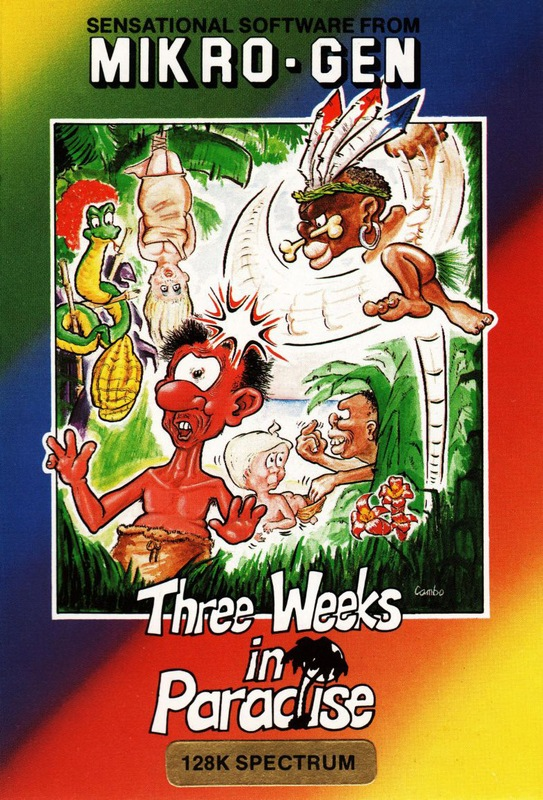
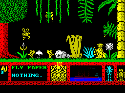
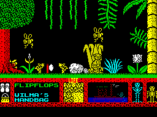

Three Weeks in Paradise


{kind=link}

| Publisher: | Mikro-Gen |
| Price: | £9.95 |
| Year: | 1986 |
| Source: | CRASH, Issue 26 |

Another issue of the magazine, and another Wally game to review. This time the title of the game has to rate as Mikro-Gen’s worst pun yet. The game features three of the Week family on a tropical island so the title is Three Weeks in Paradise (gedditt?).
The main character in the game is the ubiquitous Wally Week and he’s got the responsibility of rescuing Wilma and Herbert from the Can Nibbles tribe. The Can Nibbles are a nice bunch except for their predilection for human flesh, Wilma and Herbert are on the menu. As with most Wally games the idea is to collect a number of objects and get Wally to use them in a cunning way to achieve his aims. As might be expected, Wilma and Herbert are both well guarded: Wilma is trussed upside down, hanging from a tree and guarded by a witch doctor, while young Herbert is sitting in cooking pot with two ferocious lions standing either side.

Wally is under the tusks of a giant jumbo.
The controls are of a standard Wallyesque type with Mr Week being able to jump and move left or right. The A key is an interesting addition — its function changes depending on your location and inventory. The first use likely to be made of A is as an IN key. On some screens there are other ways of moving onto another screen, apart from the IN key. Some of the alternative exits are quite obvious or are labelled, others are a bit more obscure. The IN key is likely to cause big headaches to most map makers.
Wally is able to carry two objects at once with the items shown on a small window at the lower left hand corner of the screen with the keys 1 and 2 used for dropping or picking up the objects. Once picked up and inside a window, a small text description appears in case you can’t quite recognise Mikro-Gen’s visual interpretation of some objects. Also along the bottom half of the screen is a life counter, where each of the four lives is shown as a skull and crossbones. Next to lives are a couple of skeletons, having no apparent use at all — the only thing they do is tap their feet after long periods of Wally inactivity.

to avoid the giant flies.
As ever with Mikro-Gen, the solutions to the problems in the game are of a devious but logical nature. On the beach it seems impossible to cross without losing a life because of the quicksand. However a pair of flip flops should help your dilemma, as once they are wrapped around Wally’s feet the quicksand can safely be traversed. Most of the problems follow this sort of format.
You are not up against the clock in this game, despite the cannibal’s hunger the only danger is from a variety of nasties flitting about on different screens. There are bats, lions and even snails to dodge. Also there’s no energy bar, bump into a baddie and you’ll lose a life. After all the lives are lost, the usual Mikro-Gen analysis of performance is presented, together with a percentage of the game completed score.
CRITICISM
“Wally’s back again in style this time. With his hanky on his head, he tries to liberate Wilma and Herbert from the evil clutches of the natives. I loved this game. It was so playable and once you thought you had it made, another world was opened up to you. (Try jumping into a seaside scene). The graphics are very good and nicely animated and the sound is good. This would keep me happy for many a wintry night!”
“Five Wally games must be pushing it, I thought, as another superlative loading screen materialised — started on the game, all ready not to give it a good review. No. The game is good, very good indeed. The graphics are very ‘Wallyish’ and I loved them. A really nice tune plays as you scamper around the tropical locations. The packaging is colourful and neat and the instructions, while short, tell you all you need to know. The problems set in the game are PROBLEMS. My overall impression was that this is a professional package, containing another very professional game. Just don’t do what I nearly did: dislike it because of the star.”
“Mikro-Gen’s last release was a bit of a disappointment. Three Weeks in Paradise is the logical follow on to Everyone’s a Wally. The graphics are excellent, just like the previous Wally games. This time the puzzles seem a bit more devious but I’m sure you brainy lot will have them worked out in no time whatsoever. In this game Mikro-Gen have included some nice features like the music on/off key and the colour on/off key which determines whether Wally merges with the background or not. All in all, this is another excellent Wally game which should appeal to most of you.”
COMMENTS
| Control keys: | O/P left/right, A in, 1/2 pick up/drop, 5 pause, Q to jump |
| Joystick: | Kempston |
| Keyboard play: | Fast and responsive |
| Use of colour: | Ingenious attribute control minimises clash |
| Graphics: | The sinclair user who produced these pictures really is an ace art fiend and doesn’t need any scolding |
| Sound: | Excellent spot effects, but annoying tune that can luckily be turned off |
| Skill levels: | One |
| Screens: | 31 |
| General rating: | Another game for Wally fans everywhere |
| Use of computer: | 92% |
| Graphics: | 95% |
| Playability: | 91% |
| Getting started: | 88% |
| Addictive qualities: | 94% |
| Value for money: | 91% |
| Overall: | 93% |